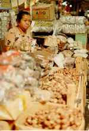
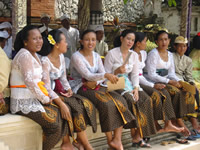

Agama




Six religions are recognised in Indonesia: Islam, Kristen, Katolik, Hindu, Buddha and Confucianism.
Hinduism and Buddhism were the first religions in Indonesia. Numerous ancient Hindu and Buddhist temples can still be seen around Indonesia. The pojok budaya icon is based on Prambanan, one of the largest Hindu temple complexes in the world. Prambanan is located in Central Java.
Indonesia used to be called the 'Spice Islands' as traders from the Middle East, China, India and later Europe all sailed through the islands, buying spices on their way. These traders brought with them their own cultures and languages, all of which influenced Indonesia in some way. The traders spread the Malay language throughout the archipelago, forming the basis for modern bahasa Indonesia, and religion also had a huge impact.
As early as the twelfth century BC, Islam was starting to spread across Indonesia westwards from Sumatra courtesy of Muslim traders from the middle East. To this day, Sumatra has the strongest Muslim influence, with Aceh being given the status of ‘special region’. This means that it can determine its own laws instead of having national law imposed, and the people of Aceh have chosen to apply more strict Islamic laws than the rest of Indonesia. For example, in Aceh, women must wear jilbab (the Islamic headscarf). It is fair to say that, if travelling in Sumatra, you should dress very conservatively, especially in Aceh.
Aceh is not the only special province in Indonesia. Before 1998, the Indonesian government in Jakarta laid down the law for all of Indonesia. However, since Soeharto lost power, different areas started requesting more independence. The government decided to grant them some more power – this is called otonomi daerah, or regional autonomy. Some areas have passed religious based laws, such as the requirement to wear the headscarf, or that women must not be out alone after 10pm, but very few areas are that strict. The important thing is to dress modestly (which includes covering shoulders, midriff and knees) and follow the cue of the local people. You are not going to get into trouble if you turn up at a beach somewhere in a pair of trousers and a loose t shirt that covers you from neck to waist and the upper part of your arms. You can always change into something more comfortable if the locals are wearing shorts and tank tops.
In the 16th century, spices were still in great demand, but the colonial powers of Holland and Portugal dominated. The Portuguese arrived first, establishing themselves (and Catholicism) in Maluku in Eastern Indonesia, but the Dutch quickly became the dominant colonial force, promoting Protestant Christianity. Protestant Christianity is recognised as a different religion to Catholicism in Indonesia (unlike in Australia or other countries where both come under the banner of Christianity). Look up religion in Indonesia on the internet to try to find out what the percentages are for the different religions.
One little island of Indonesia has been barely touched by either the Islamic or colonial influence. Somehow, Bali maintained its strong Hindu religion, despite being flanked on either side by mostly Muslim Java and Lombok. The Dutch colonial government actually banned Western missionaries from Bali, recognising the unique culture of the island and Bali to this day remains strongly Hindu.
For more information on the statistics of religion across the islands of Indonesia, check out: http://www.depag.go.id/index.php?a=artikel&aid=39